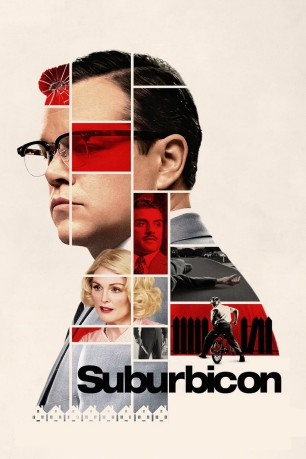

#8510 Suburbicon - Willkommen in der Nachbarschaft
 
 IMDB-Wertung: 5.6 / 10
IMDB-Wertung: 5.6 / 10  Metascore: 42
Metascore: 42 
Suburbicon ist der Inbegriff des amerikanischen Traums vom Leben in der Vorstadt: Hier können Vater, Mutter und Kind in ihrem in Reihe gestellten Eigenheim noch eine Familie sein - nur echt mit getrimmtem Vorzeigerasen. Es sind die 50er, die Welt ist wieder in Ordnung, Pleasantville lässt grüßen. Doch das von Verfehlung unberührte Habitat des Vorstadtlebens wird nicht nur für eine Familie aus den Angeln gehoben, als deren Heim Gegenstand eines Hausfriedensbruchs wird, der für den Verursacher tödlich endet. Bei dem Versuch, die Fassade des Musterbürgers aufrecht zu erhalten, schleicht sich in der Folge Erpressung, Betrug und Vergeltung in die einst heile Welt.
Jahr: 2017
Dauer: 105 Minuten
FSK: 16
Land: England Studio: Concorde FilmverleihTonspuren: DTS - ,
Untertitel: Deutsch,
Auflösung: 1080p (1920x804) Größe: 7116 MB
Genre: Thriller, Drama, Krimi, Mystery
Regisseur:  George Clooney
George Clooney
Drehbuch: Joel Coen
Soundtrack: Alexandre Desplat
Darsteller:
 Steve Monroe als Mailman Henry
Steve Monroe als Mailman Henry- Landon Gordon als Kid on Bike
- Hope Banks als Mrs. Pendalton
- Karimah Westbrook als Mrs. Mayers
 James Handy als Mayor Billings
James Handy als Mayor Billings Mather Zickel als James
Mather Zickel als James Josh Meyer als Freddy (Housing Planner)
Josh Meyer als Freddy (Housing Planner)- Vince Cefalu als Chuck
- Michael D. Cohen als Stretch
- Corey Allen Kotler als Bomber
- Leith M. Burke als Mr. Mayers
 Julianne Moore als Rose / Margaret
Julianne Moore als Rose / Margaret Noah Jupe als Nicky
Noah Jupe als Nicky- Tony Espinosa als Andy Mayers
 Alex Hassell als Louis
Alex Hassell als Louis Matt Damon als Gardner
Matt Damon als Gardner Glenn Fleshler als Sloan
Glenn Fleshler als Sloan- Steven Shaw als Doctor Jennings
- Don Baldaramos als Reverend Jones
 Gary Basaraba als Mitch
Gary Basaraba als Mitch- Ellen Crawford als Eileen
 Megan Ferguson als June
Megan Ferguson als June Allan Wasserman als Roger
Allan Wasserman als Roger- Mark Leslie Ford als Bill Thackery
- Nancy Daly als Linda (Gardner's Secretary)
 Richard Kind als John Sears
Richard Kind als John Sears- Robert Pierce als Ed Pappas
 Pamela Dunlap als Mrs. Krup
Pamela Dunlap als Mrs. Krup Jack Conley als Hightower
Jack Conley als Hightower- Frank Califano als Father Dominicus
- Lauren Burns als Cindy (Mitch's Secretary)
 Biff Yeager als Mr. Karger
Biff Yeager als Mr. Karger Oscar Isaac als Bud Cooper
Oscar Isaac als Bud Cooper- Benjamin Franczuszki als Reporter
 Peggy Miley als Betty (Interviewee)
Peggy Miley als Betty (Interviewee)- Inbal Amirav als Church Choir Singer (uncredited)
 Erik Aude als Riot Cop (uncredited)
Erik Aude als Riot Cop (uncredited)- Gia Balzano als Mississippi Younger Daughter (uncredited)
- Steven T. Bartlett als Bus Driver (uncredited)
- Tim Beaufoy als Protester (uncredited)
- Becca Beton als New York Mom (uncredited)
- N.W. Bishop als Neighbor / Protester (uncredited)
- Julian R. Booth als Protestor (uncredited)
- Andrew Boyle als Clinic Doctor (uncredited)
- Matthew Broadley als Town Hall Teen (uncredited)
- Bobby Brodney als Reporter (uncredited)
- Stephen Brown als Bill (uncredited)
- Benjamin Burt als Town Hall Protestor (uncredited)
- Paul Cartwright als Neighbor / Protestor (uncredited)
- Owen Conway als Town Hall Protester (uncredited)
Datei: X:\2017(N-Z)\Suburbicon - Willkommen in der Nachbarschaft (2017, FSK16, 1920x804).mkv seit 12.03.2018
Festplatte: HD 2017(A-Z)-2018(A-F)
 Es gibt insgesamt 170 Filme in der Gruppe '2017(N-Z)'
Es gibt insgesamt 170 Filme in der Gruppe '2017(N-Z)'